Title: International Harvester Refrigerator Recipes
Author: Irma Harding
Release date: July 7, 2021 [eBook #65793]
Most recently updated: October 18, 2024
Language: English
Original publication: United States: International Harvester Company, 1950
Credits: Stephen Hutcheson, Lisa Corcoran and the Online Distributed Proofreading Team at https://www.pgdp.net
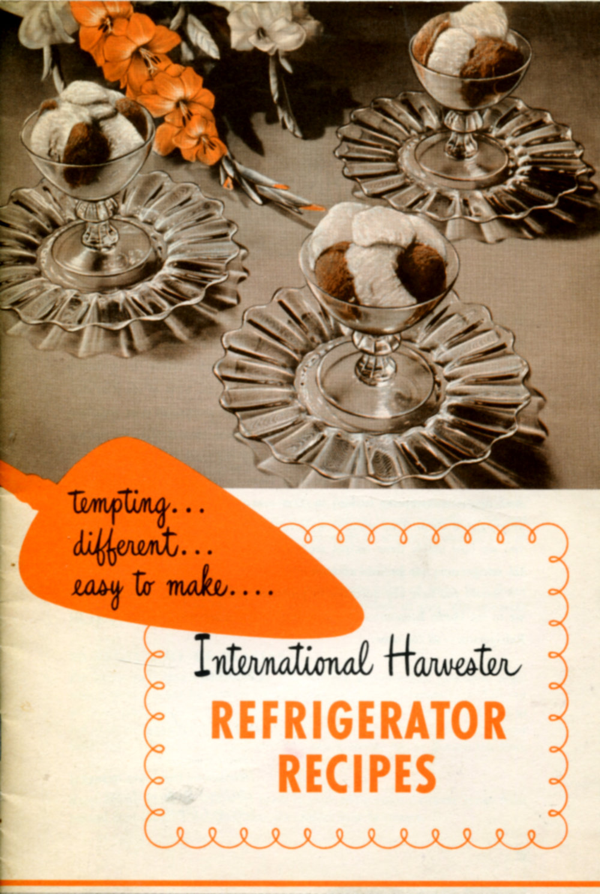
tempting ...
different ...
easy to make....
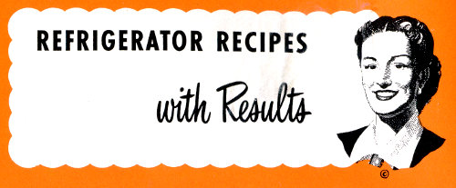
In this booklet are refrigerator recipes and suggestions which we have developed to make your menus more tempting and varied ... to make meal planning easier. All have been tried, tested, and checked. Included are recipes for sparkling beverages, luscious desserts, and refreshing salads. If you want to see your children race to the table ... if you want to see pleasure written all over your husband’s face ... if you value your reputation as a hostess, with a talent for the unusual in food, use these recipes. We can vouch for the results!
They’re so easy-to-make, you can whip them up with a minimum of effort. And they’re so tempting to look at, that eyes open ... mouths water ... at the very sight of them. They really make mealtime the best time of the day. When you see how usable these recipes are, you’ll keep this booklet right near your IH refrigerator ... to be used constantly!
Should you have any questions or problems, please write us. Remember that we in the Home Economics Department are at your service—just like your IH Refrigerator—all the time!
Sincerely,
Home Economist
International Harvester Company
180 North Michigan Avenue
Chicago 1, Illinois
Copyright 1950, International Harvester Company
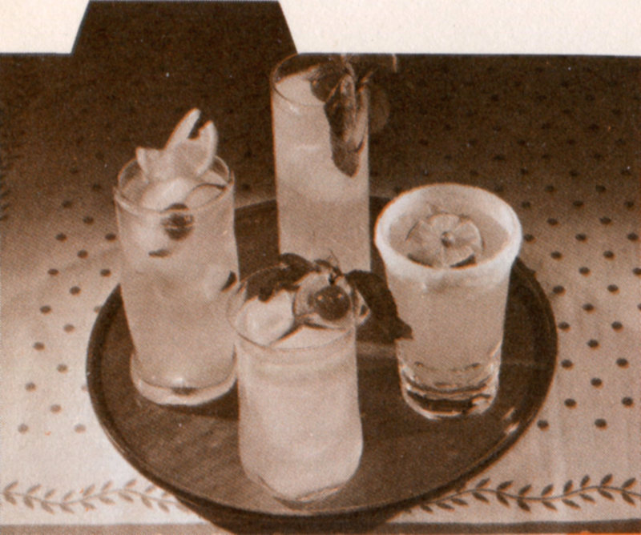
With your International Harvester Refrigerator to provide you with a generous supply of ice cubes, you will be serving many cooling, colorful beverages in the summer time. Here are some suggestions for making these mid-afternoon and evening pick-ups especially refreshing.
Use either crushed or whole cubes. Crushed ice cools beverages more quickly; cubes last longer and add a pleasant tinkle.
Freeze curls of lemon or orange peel, maraschino cherries with stems, or sprigs of mint, a raspberry or strawberry in ice cubes.
Freeze leftover fruit drinks in the ice-cube trays to serve in iced tea or other beverages.
For fancy cubes, freeze the cubes slowly to prevent cloudiness and expansion. If fruit is to be frozen in the cube, fill tray ⅓ full of liquid, partially freeze and add fruit. Allow to freeze into position. Add water to within ¼ inch of top of tray and finish freezing.
Freeze punch in cubes or in a block—ideal for chilling the punch bowl and cooling the beverage. Children will love these frozen cubes of sweet fruit flavor if sticks are inserted in the mixture when nearly frozen so they will resemble frozen suckers.
Put lemon juice into a shallow dish. Sift superfine granulated or powdered sugar onto a plate—about ¼ inch deep. Invert each glass in the lemon juice. Lift out of juice, place into the sugar for a minute. Lift carefully out of the sugar so as not to jar the sugar coating which has formed on the rim. Place in the refrigerator until “set.” Fill glasses with the beverage, being careful not to disturb the frost.
Keep several kinds of syrups on hand in your refrigerator. Leftover syrup from canned fruit makes a delicious base for chilled fruit beverages.
1 cup sugar
1 cup water
Combine sugar and water, boil 5 minutes, cool and store in refrigerator; can be used for iced tea and fruit drinks.
½ cup cocoa or 2 squares unsweetened chocolate
1 cup sugar
1 cup water
⅛ teaspoon salt
1½ teaspoons vanilla
Combine cocoa, sugar, water and cook over low heat about 5 minutes, or until thickened. Cool. Add salt and vanilla. Store in refrigerator. Chocolate syrup is ideal for milk drinks.
2 teaspoons tea
2 cups boiling water
1 cup sugar
1 cup orange juice
½ cup lemon juice
½ cup cold water
1 quart chilled ginger ale
Pour boiling water over tea. Cover and allow to stand 3 minutes. Strain over sugar. Stir until sugar is dissolved. Cool. Add orange and lemon juices and cold water. Ice well. Add ginger ale just before serving punch. Base can be stored in refrigerator for later use. Yield: 10 to 12 servings.
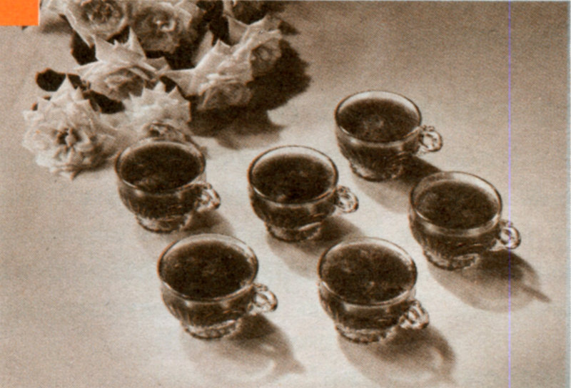
¼ cup sugar
¾ cup water
One 6-oz. can frozen orange juice
1 bottle (1 pint) cranberry juice
2 tablespoons lemon juice
Red food coloring
1 cup ginger ale
Add water to sugar; place over heat and bring to a boil, dissolving sugar. Cool. Add frozen orange juice, cranberry juice, lemon juice and few drops food coloring. Mix well and chill. Just before serving add ginger ale. Yield: 1½ quarts.
2 quarts lime sherbet
2 quarts ginger ale
Add ginger ale to sherbet in a punch bowl. When sherbet has partially melted, serve in punch cups. Other flavor sherbets can be used. Serves 24.
One 1-lb. package frozen strawberries
½ pint strawberry ice cream
2 cups milk
Allow strawberries to thaw slightly. Sieve berries and add milk and ice cream. Stir until ice cream is partially melted. Serve in tall glasses. Yield: 1 quart.
2 eggs, separated
3 tablespoons sugar
1 cup milk
½ cup unsweetened pineapple juice
Beat egg yolks, add sugar and milk. Fold in stiffly beaten egg whites. Add pineapple juice and mix well. Pour into fruit juice glasses. Especially yummy for the kiddies! Yield: 4 servings.
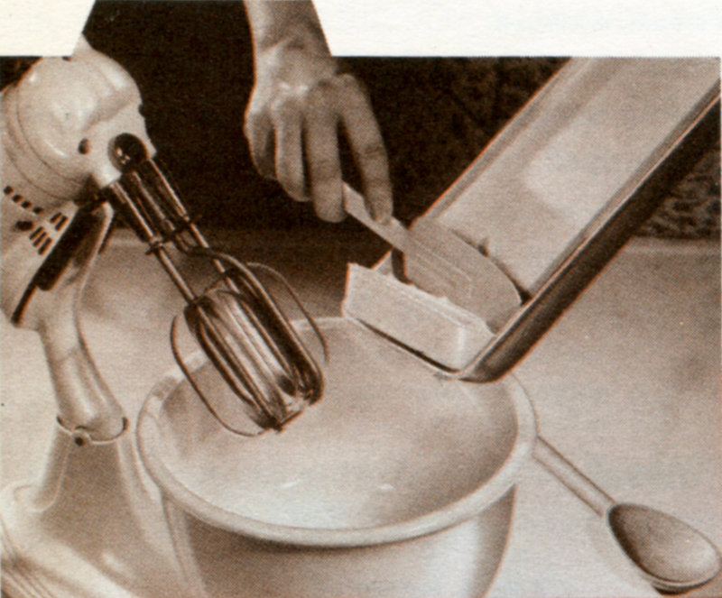
You can easily make delicious, smooth-textured frozen desserts in your International Harvester refrigerator. And you can add variations of your own choice. Fruits in season add a luscious taste as do flavors such as chocolate, coffee, maple, caramel, marshmallow or nuts. Having a supply of ice cream variations on hand in your refrigerator will be a convenience and will provide tempting treats for you and your family.
Ice cream frozen in a household refrigerator usually employs special ingredients such as whole eggs, egg yolks, gelatin, corn syrup, flour or cornstarch, or hot syrup poured over egg yolks or whites to counteract the formation of ice crystals. These ingredients add body and richness and contribute to the smoothness 6 by producing finer ice crystals. They also increase the amount of air that can be incorporated, resulting in a greater volume. Combinations that are too sweet will not freeze firm in a refrigerator. A good proportion is 1 part sugar to 4 parts liquid.
To freeze ice cream, set the cold control for fast freezing (coldest position). Pour the mixture into the tray and place it on the bottom of the freezing compartment in contact with the refrigerated surface. Freeze until firm throughout. Remove the frozen mixture from the tray to a chilled bowl and break up the mixture with wooden spoon (a wooden spoon does not conduct heat from the hand as a metal one does). Work quickly. Beat with an electric mixer or a rotary beater until mass is free of hard lumps. Gently fold in egg whites or whipped cream. Return the mixture at once to the tray and place it in the freezing compartment. Moisten the bottom of tray to insure good contact and to hasten freezing. When frozen, reset cold control at midway between normal and coldest point to mellow ice cream until time to serve.
1 envelope gelatin
¼ cup cold water
1¾ cups milk, scalded
½ cup sugar
¼ teaspoon salt
2 teaspoons vanilla
1½ cups cream, whipped
Soften gelatin in cold water and dissolve in hot milk, Add sugar, salt and vanilla. Cool until slightly thickened. Fold in whipped cream. Pour in refrigerator tray and freeze 1 hour, or until mush-like in consistency. Turn into chilled bowl. Beat with rotary beater or electric mixer until smooth. Work quickly so mixture does not melt. Return to refrigerator tray to complete freezing. Yield: 6 to 8 servings.
⅔ cup sugar
1½ tablespoons cornstarch
1½ cups top milk
2 eggs, separated
¼ teaspoon salt
2½ teaspoons vanilla
1 cup cream, whipped
Combine sugar and cornstarch in the top of a double boiler; gradually stir in milk. Cook over boiling water, stir constantly, until the mixture thickens. Cover and cook for 10 minutes. Stir a small portion of the hot mixture into the beaten egg yolks. Add yolks to remaining hot mixture. Cook over hot, not boiling, water; stir constantly for 3 minutes. Cool. Add vanilla and salt. Fold beaten egg whites into cooled custard. Pour into refrigerator tray and freeze until firm throughout. Remove to a chilled bowl. Beat with rotary beater or electric mixer until smooth. Work quickly so mixture does not melt. Fold in whipped cream. Return to refrigerator tray to complete freezing. Yield: 6 to 8 servings.
1 square (1 ounce) unsweetened chocolate
3 tablespoons sugar
½ cup milk
½ cup chopped dates
½ cup currants
½ cup chopped pecans
1 egg separated
1 tablespoon sugar
1 teaspoon vanilla
1 cup cream, whipped
Melt chocolate with sugar and milk. Add dates, currants, pecans and cook over hot water until fruits are somewhat softened. Add beaten egg yolk. Chill this mixture in refrigerator. Whip egg white until stiff, add 1 tablespoon sugar. Fold into chocolate mixture. Add vanilla. Fold whipped cream into chocolate mixture. Set cold control at coldest setting; pour mixture into freezing tray and freeze until firm. Reset cold control at midway between normal and coldest point and allow pudding to mellow until serving time. Yield: 6 servings.
1½ cups chocolate cookie crumbs
1½ pints ice cream
¼ cup butter
¼ cup sugar
Roll thin chocolate wafers with rolling pin to make crumbs. Cream butter. Add crumbs and sugar. Mix well. Pack half the crumb mixture in freezing tray. Place in refrigerator to chill. Cover crumbs with ice cream; pack down well. Press remaining crumbs firmly on top. Return to refrigerator and freeze. If desired garnish with whipped cream before serving. Yield: 6 to 8 servings.
1¼ cups brown sugar
¾ cup light corn syrup
¼ cup butter
¾ cup light cream
Combine ingredients; heat slowly until sugar is dissolved. Cook until mixture spins a thread (232°F.) Cool. Yield: 2 cups.
1 cup sugar
1 cup water
½ cup light corn syrup
3 squares (ounces) unsweetened chocolate
½ teaspoon vanilla
1 cup evaporated milk
Combine sugar, water and corn syrup; heat slowly until sugar is dissolved. Cook, stirring occasionally, to soft ball stage (236°F.). Remove from heat and add chocolate, stir until melted. Add vanilla and evaporated milk. Cool. Yield: 2½ cups.
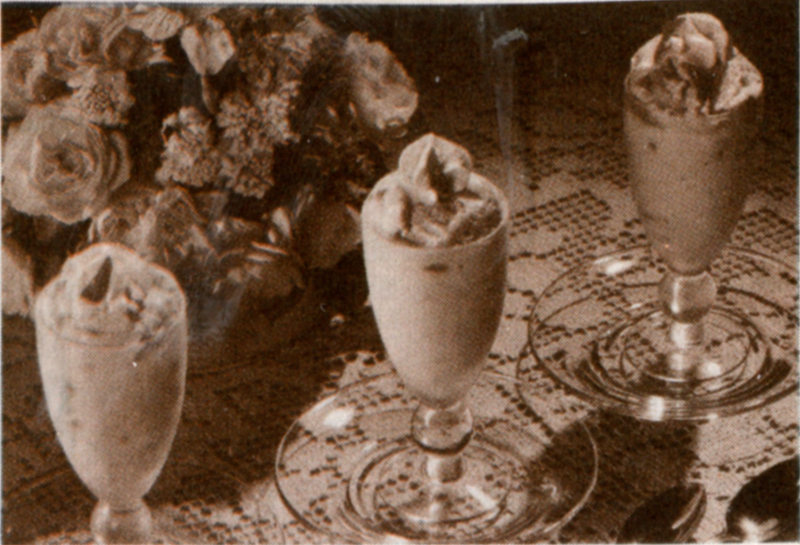
PARFAITS: A parfait is made from stiffly beaten egg whites over which a thick, hot syrup is poured. When the mixture is cool, it is combined with stiffly beaten whipped cream. Parfaits are frozen without stirring.
¾ cup sugar
½ cup water
2 eggs, separated
⅓ cup maraschino cherries, chopped
¼ cup maraschino cherry juice
2 cups cream, whipped
Boil sugar and water until it spins a thread (232°F.). Add slowly to beaten egg yolks. Beat constantly until cooled. Stir in fruit and juice. Fold in beaten egg whites and cream. Turn into refrigerator tray. Set cold control on coldest position. When frozen, reset cold control at midway between normal and coldest point and allow mixture to mellow several hours. Yield: 8 servings.
NOTE: Other fruits and juices can be substituted for the cherries.
⅓ cup molasses
2 tablespoons sugar
¼ cup water
2 eggs whites, stiffly beaten
1 cup heavy cream, whipped
1 teaspoon vanilla
¾ teaspoon cinnamon
½ cup chopped black walnuts
Cook together molasses, sugar and water to soft ball stage (236°F.). Gradually pour syrup into stiffly beaten egg whites; beat constantly until mixture is cool. Add vanilla and cinnamon. Fold in whipped cream and walnuts. Pour mixture into freezing tray of refrigerator and place in freezing unit (set cold control on coldest setting) to freeze. After mixture is frozen reset cold control at midway between normal and coldest point and allow mixture to mellow several hours Yield: 6 servings.
MOUSSES: A mousse is made from whipped cream and combined with one of various flavorings, or fruit pulps, chocolate, macaroons, etc. Mousses are frozen without stirring. Set cold control on coldest setting. When frozen, reset cold control midway between normal and coldest to mellow before serving.
2 cups cream, whipped
⅓ cup sugar
1½ teaspoons vanilla
2 egg whites, beaten (optional)
1½ teaspoons lemon juice
Add the sugar, vanilla and lemon juice to whipped cream. Fold in egg whites. Freeze in a refrigerator tray without stirring. When frozen, reset cold control at midway between normal and coldest point and allow mixture to mellow for several hours. Yield: 8 servings.
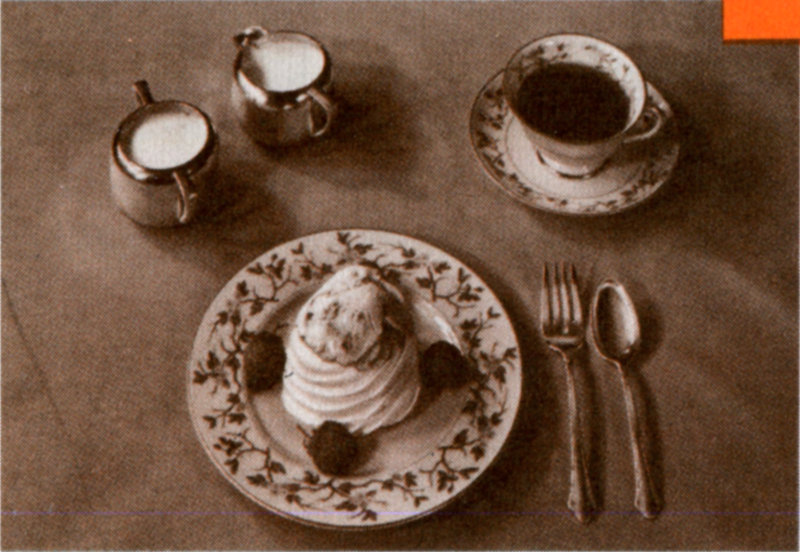
1 cup crushed strawberries
½ cup sugar
2 cups heavy cream, whipped
1 teaspoon vanilla
⅛ teaspoon salt
Combine fruit pulp and sugar. Fold in whipped cream; add vanilla and salt. Freeze in refrigerator tray without stirring. After freezing, reset cold control at midway between normal and coldest point and allow mixture to mellow several hours. Yield: 8 servings.
SHERBETS: A sherbet is an ice with egg whites, milk, cream or gelatin added. Any recipe for an ice can be converted to a sherbet by the addition of stiffly beaten egg whites, or by substituting milk for the water called for in the recipe. Rather than make a syrup, scald the milk with the sugar and corn syrup in the top of a double boiler. Cool, add remaining ingredients and proceed as directed for ice cream.
Remove the mixture from the tray into a chilled bowl. Add unbeaten egg whites. Beat until light in color and a smooth mush in texture. Put back into the tray and return to refrigerator to complete freezing.
1 cup sugar
2 cups water
2 teaspoons unflavored gelatin
¼ cup cold water
2 egg whites, unbeaten
1 cup fruit juice or ½ cup crushed fruit
¼ teaspoon salt
2 tablespoons lemon juice
Soften gelatin in ¼ cup cold water. Combine sugar and water and bring to a boil. Dissolve gelatin in hot mixture. Cool. Add fruit juices or crushed fruit and salt. Pour into refrigerator tray. Freeze until firm throughout. Remove to chilled bowl. Add unbeaten egg whites. Beat with rotary beater or electric mixer until light and fluffy. Return to tray. Freeze until firm. Yield: 6 to 8 servings.
4 cups cranberries
2 cups water
2 cups sugar
1 teaspoon unflavored gelatin
1 cup orange juice
3 tablespoons grated orange rind
¼ cup lemon juice
Cook cranberries in water until skins pop; put through a food press. Add sugar and heat to boiling. Soften the gelatin in orange juice and stir into hot mixture. Add orange rind and lemon juice. Pour into refrigerator tray and freeze. Turn into mixing bowl and beat until light and fluffy. Return to tray. Freeze firm. Serve sherbet as a main course accompaniment, a punch float or a dessert.
2 teaspoons grated lemon rind
½ cup lemon juice
1½ cups sugar
2 cups milk
2 cups light cream
Combine lemon rind, lemon juice, and sugar. Allow to stand several hours. Add lemon mixture to milk and cream. Turn into refrigerator tray. Freeze until firm throughout. Remove to chilled bowl and beat with rotary beater or electric mixer until smooth and fluffy. Return to refrigerator to complete freezing. Yield: 8 to 10 servings.
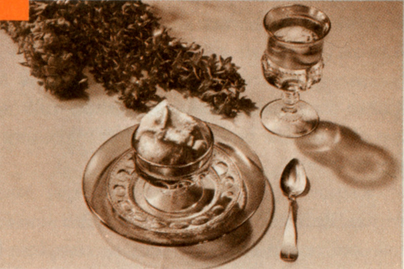
2 cups mashed bananas
⅓ cup lemon juice
⅓ cup orange juice
½ cup light corn syrup
⅛ teaspoon salt
1 egg white
⅓ cup sugar
1 cup milk
¼ cup maraschino cherry juice
½ cup coarsely chopped maraschino cherries
½ teaspoon grated orange rind
Mix lemon juice with bananas, then add orange juice, corn syrup and salt. Beat egg white until stiff but not dry; gradually beat in sugar. Fold into banana mixture. Add milk, cherry juice, cherries and orange rind. Pour into refrigerator tray. Freeze until mixture is almost firm. Place in chilled bowl and beat. Return to tray and continue freezing until firm. Yield: 8 servings.
ICES: An ice is a mixture of fruit juices, sugar and flavoring. Combine fruit juices and chilled syrup as directed. Mix well. Pour into freezing tray. Freeze until firm throughout. Remove from tray to a chilled bowl, break up with a wooden spoon and beat with an electric mixer or rotary beater until free of hard lumps but still a thick mush. Work quickly. Return to tray to complete freezing.
2½ cups water
¾ cup corn syrup
1 cup sugar
1 tablespoon grated lemon rind
⅔ cup lemon juice
¼ teaspoon salt
Yellow food coloring
Combine water, corn syrup, sugar and lemon rind in a saucepan. Stir until sugar is dissolved. Bring to a boil and boil for 5 minutes without stirring. Cool. Add lemon juice. Strain mixture to remove lemon rind. Tint a delicate yellow shade with a few drops of food coloring. Freeze in a refrigerator tray until firm throughout. Remove to chilled bowl. Break up with a wooden spoon and beat with rotary beater or electric mixer until light. Return to refrigerator to complete freezing. Yield: 6 to 8 servings.
There are many delectable desserts made from a gelatin base. These are usually called Whips, Snows, or Creams, according to the fruit combination, such as Cherry Whip, Grape Snow, or Pineapple Bavarian Cream. Other desserts which have eye and taste appeal are combinations of fruit, gelatin or cream fillings plus cake or cookie foundation. Again, these are ideal ways to use the last of the angel food, sponge or plain cake or extend a small amount of a food to fit your current needs.
Snow puddings attain a characteristic light, airy texture through the addition of beaten egg whites which are folded in when the gelatin mixture begins to set. The same holds true of Bavarian creams except that whipped cream takes the place of the egg whites.
To use plain gelatin as a base, soften gelatin in a small amount of cold liquid. Stir into the hot liquid. For general use, allow 1 envelope of gelatin to 2 cups of liquid. If acid fruit juices are used, the proportion of 1 envelope of gelatin to 1¾ cups liquid is more satisfactory. To hasten setting of gelatin mixtures and to preserve the fresh fruit flavors, heat only half of the liquid to dissolve the softened gelatin. Then add the other half cold. Note: Fresh pineapple juice or pulp must be scalded before using with gelatin because of an enzyme in fresh pineapple that keeps gelatin from jelling.
To remove molded gelatin desserts, dip mold into a pan of warm (not hot) water for about 30 seconds. The water should come almost to the top of the mold. Then dessert can be removed easily to the serving plate by inverting mold on the plate. Turn mold over carefully and dessert will remain on plate; this action is done in the same manner as one removes a cake from the pan.
1 package orange-flavored gelatin
1½ cups hot water
¼ cup sugar
Few grains salt
¾ teaspoon grated orange rind
½ cup orange juice
¾ cup whipping cream
1½ cups finely diced bananas
12 lady fingers
Dissolve gelatin in hot water and add sugar, salt, orange rind and orange juice. Chill until mixture starts to thicken. Whip cream until thick but not stiff. Fold cream and bananas into gelatin. Line a bread pan with waxed paper. Line bottom and sides of mold with lady fingers, split lengthwise. Fill mold with gelatin mixture. Arrange lady fingers over top of gelatin. Chill until firm. Remove from mold and slice. Yield: 8 servings.
1 envelope unflavored gelatin
¼ cup cold water
1 No. 2 can crushed pineapple
1 cup sugar
½ cup chopped maraschino cherries
¼ cup chopped pecans
3 egg whites
2 cups whipping cream
2 dozen lady fingers or slices of sponge cake
Soften gelatin in cold water. Drain pineapple and heat pineapple juice. Dissolve gelatin in pineapple juice, add sugar and stir until dissolved. Cool. Add cherries, nuts and drained pineapple. Beat egg whites until stiff but not dry. Fold into fruit mixture. Fold in whipped cream. Arrange a layer of lady fingers or sponge cake on bottom and around sides of 9-inch square pan. Pour mixture into pan and top with a layer of lady fingers or sponge cake. Let stand in refrigerator 24 hours. Slice and serve. Yield: 12 servings.
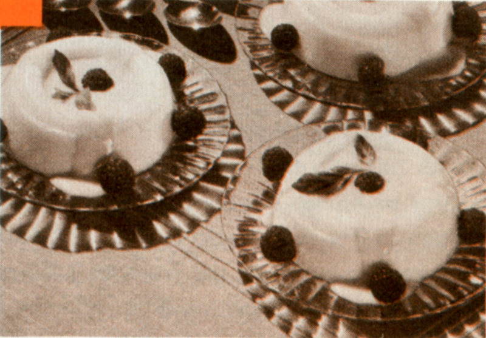
1 envelope unflavored gelatin
¼ cup cold water
1 cup boiling water
⅔ cup sugar
1 teaspoon grated lemon rind
¼ cup lemon juice
¼ teaspoon salt
2 egg whites
Soften gelatin in cold water. Dissolve in boiling water. Add sugar, grated rind, lemon juice and salt. Cool. Chill until partially set. Beat egg whites until stiff. Add gelatin mixture. Continue beating until mixture holds its shape. Pour into mold or ice cube tray. Chill. Serve with custard sauce. Yield: 6 to 8 servings.
Variation: Substitute 1 cup hot fruit juice for water. Decrease lemon juice to 2 tablespoons. Omit lemon rind.
2 cups milk
2 egg yolks
¼ cup sugar
¼ teaspoon salt
1 teaspoon vanilla
Scald milk in the top of a double boiler. Beat egg yolks slightly. Add sugar and salt. Stir several spoons of scalded milk into egg mixture. Keep water in bottom part of double boiler below boiling point during rest of the cooking period. Add egg mixture to scalded milk, stirring constantly. Cook until the custard thickens only enough to coat a metal spoon. Cool. Add vanilla. Store in covered dish in the refrigerator until time to serve. Yield: 6 to 8 servings.
1 envelope unflavored gelatin
¼ cup cold water
2 eggs, separated
¼ teaspoon salt
⅓ cup sugar
1 cup milk, scalded
1 teaspoon vanilla
1 cup cream, whipped
Soften gelatin in the cold water. Combine beaten egg yolks, salt and sugar. Add scalded milk slowly, stirring constantly. Place in top of double boiler. Dissolve softened gelatin in hot mixture. Cook over hot, not boiling water until mixture coats a metal spoon. Cool until mixture begins to thicken. Add vanilla. Fold in stiffly beaten egg whites and whipped cream. Turn into a 1½ quart mold or into 6 to 8 individual molds that have been rinsed in cold water. Chill until set. Unmold for serving either plain or topped with fresh fruit or berries.
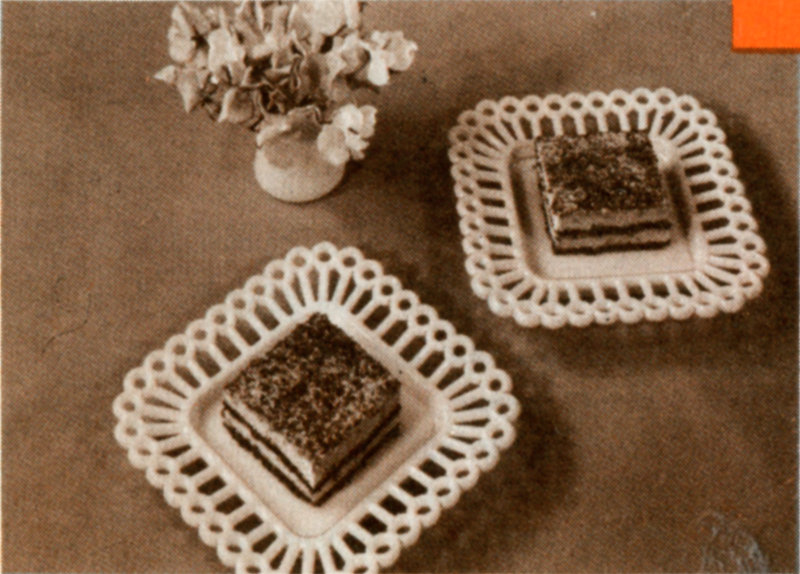
1 cup crushed peppermint stick candy
2 cups whipping cream
½ envelope unflavored gelatin
2 tablespoons cold water
One 10-ounce can chocolate wafers
Combine candy and ½ cup whipping cream, heat in double boiler until candy is dissolved. Soften gelatin in cold water and add to candy mixture. Chill until partially set. Fold in 1½ cups cream, whipped. Place chocolate wafer halves around edge of 8-inch square pan. Arrange layer of wafers in bottom of pan. Add half of gelatin mixture; top with layer of wafers, add remaining gelatin mixture and top with wafer crumbs. Chill at least 12 hours. Yield: 9 servings.
Two 8-inch sponge cake layers
1½ cups whipping cream
1 cup thick chocolate syrup
2 tablespoons sugar
¼ teaspoon salt
¼ chopped nuts
Split layers of sponge or plain cake in half crosswise, making 4 layers. Whip cream until it begins to thicken. Add the chocolate syrup all at once. Continue to beat until the mixture is smooth, thick and well blended. Add sugar and salt. Spread between the cake layers. Cover top and sides with the remaining cream. Sprinkle nut meats over top of cake. Chill in the refrigerator for 24 hours. Yield: 8 to 10 servings.
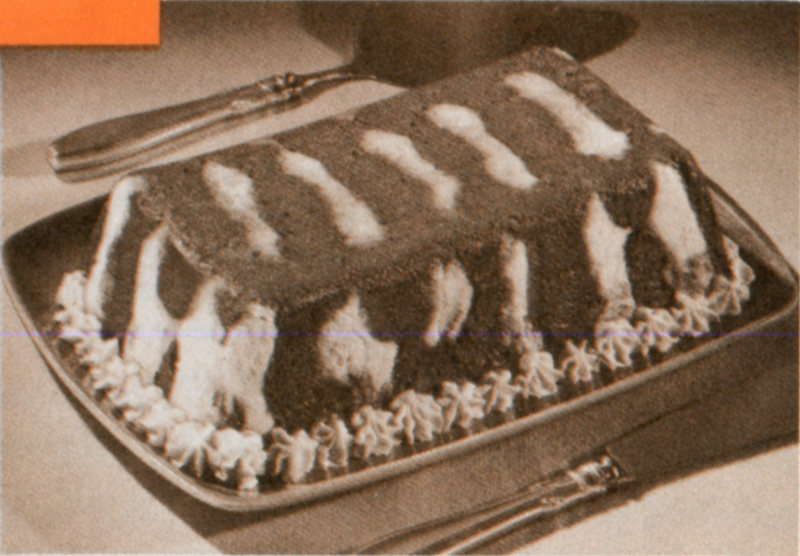
1 package chocolate bits
2 tablespoons sugar
3 tablespoons cold water
3 eggs, separated
1 cup cream, whipped
1 teaspoon vanilla
½ teaspoon peppermint extract (if desired)
¼ teaspoon salt
18 lady fingers, split
Melt chocolate bits in top of double boiler. Add sugar and water. Mix well. Remove from heat. Stir gradually into beaten egg yolks. Beat until smooth. Chill until cold. Add salt and flavorings. Beat the egg whites until stiff but not dry. Fold into chocolate mixture. Fold in the whipped cream. Line a loaf pan with waxed paper. Put a layer of lady fingers on bottom and around sides. Add half the chocolate filling, more lady fingers, remaining chocolate and lady fingers. Chill in the refrigerator until set. To serve, remove from pan and garnish with whipped cream. Yield: 12 servings.
2 squares (2 ounces) unsweetened chocolate
½ cup boiling water
1 envelope unflavored gelatin
¼ cup cold water
3 beaten egg yolks
¾ cup sugar
¼ teaspoon salt
½ teaspoon vanilla
3 egg whites stiffly beaten
Melt chocolate in boiling water. Soften gelatin in cold water and add to chocolate mixture; stir until gelatin is dissolved. Beat egg yolks, add ½ cup sugar and beat until light and fluffy. Combine with chocolate mixture; add salt and vanilla. Cool. Add remaining ¼ cup sugar to stiffly beaten egg whites and fold into chocolate mixture until thoroughly blended. Chill in bowl. Spoon into sherbet glasses. Garnish with whipped cream. Yield: 8 to 10 servings.
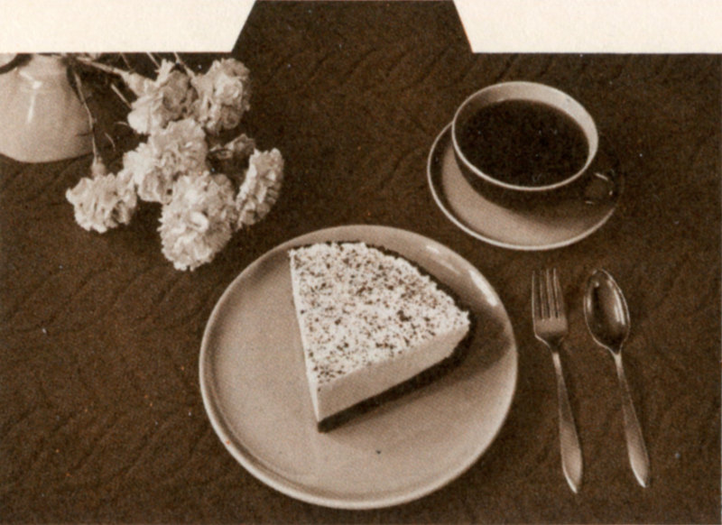
Light, airy, colorful and delicious are the refrigerator pies you can prepare with the aid of your International Harvester Refrigerator. These pies are commonly referred to as chiffon, cream or Bavarian pies. Being light and cool, they are ideal for the final touch to a summer dinner. The shell or crust can be either baked pastry or a crumb crust, according to one’s individual preference. If a baked pie shell is preferred, it will keep its shape better if chilled in the refrigerator before baking.
CRUMB PIE SHELL: Add ½ cup butter and 2 to 4 tablespoons sugar to 1¼ cup crumbs. For crumbs use either graham crackers, chocolate wafers, or crisp prepared cereals. Spread in a 9-inch pie pan and chill thoroughly.
2 cups quick oats
½ teaspoon cinnamon
⅔ cup melted butter
½ cup brown sugar
Mix all ingredients. Spread ½ cup of mixture on a shallow pan and press rest of mixture into a 9-inch pie pan. Bake in moderate oven (350°F.) for 20 minutes. Sprinkle the ½ cup crumbs over top of pie for garnish.
1 cup crushed ginger snaps
¼ cup sugar
¼ cup melted butter
Mix sugar with ginger snap crumbs. Add melted butter and stir until well blended. Press firmly into bottom and sides of 9-inch pie pan. Bake 8 minutes at 375°F. Cool.
4 eggs, separated
½ cup lemon juice
½ teaspoon salt
¾ cup sugar
1 envelope unflavored gelatin
¼ cup cold water
1 teaspoon grated lemon rind
One 9-inch pie shell
Combine beaten egg yolks, lemon juice, salt and ¼ cup of sugar in top of a double boiler. Cook over hot water to a custard consistency. Soften gelatin in cold water. Dissolve in hot mixture. Add lemon rind. Cool until mixture begins to thicken. Beat egg whites until stiff. Gradually add the remaining ½ cup of sugar. Fold into lemon mixture. Fill a baked pie shell with mixture and chill in refrigerator. Garnish pie with sweetened whipped cream before serving.
1 envelope unflavored gelatin
2 tablespoons cold water
2 eggs, separated
1½ cups milk
½ teaspoon salt
½ cup sugar
2 teaspoons vanilla
One 9-inch crumb shell
Soften gelatin in cold water. Combine beaten egg yolks, milk, salt and ¼ cup of the sugar in the top of a double boiler. Cook over hot, not boiling, water until mixture thickens, stirring constantly. Dissolve softened gelatin in hot mixture. Chill until mixture begins to thicken. Add vanilla. Beat egg whites only until stiff; gradually beat in remaining sugar. Fold into gelatin mixture. Pile lightly into crumb shell. Chill until firm. Spread with whipped cream and garnish with grated semi-sweet chocolate or chocolate shot.
1 envelope unflavored gelatin
¼ cup cold water
2 squares (2 oz.) unsweetened chocolate
1 cup milk
2 eggs, separated
¼ teaspoon salt
½ cup sugar
⅔ cup cream, whipped
1 teaspoon vanilla
One 9-inch pie shell
Soften gelatin in cold water. Combine chocolate and milk in the top of double boiler. Heat over boiling water until chocolate is melted. Beat until smooth. Dissolve softened gelatin in the hot mixture. Beat egg yolks until thick and lemon-colored. Gradually beat in salt and about half the sugar. Add hot chocolate mixture slowly. Add vanilla. Mix well. Chill until mixture begins to thicken. Beat egg whites only until stiff. Gradually beat in remaining sugar. Fold egg whites and whipped cream into the chocolate mixture. Pile lightly in the pie shell. Chill in refrigerator until firm. To serve, top with sweetened whipped cream.
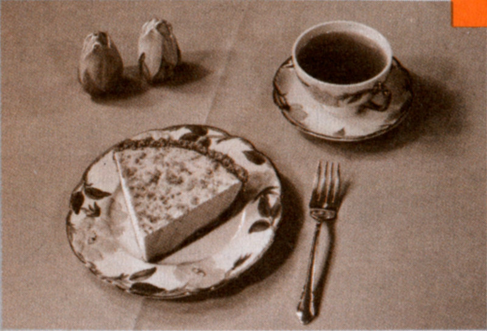
1 package strawberry flavored gelatin
½ cup hot water
¼ cup lemon juice
¼ cup sugar
¼ teaspoon salt
1½ cups heavy cream
1 teaspoon lemon rind, grated
Line a deep 9-inch pie plate with graham cracker crust (Page 15). Save ¼ cup of the crumb mixture for topping. Dissolve gelatin in hot water. Add sugar, lemon juice and salt; chill until partially set. Whip cream until it begins to thicken. Add gelatin mixture and whip until soft peaks are formed. Fold in lemon rind. Pour into graham cracker crust. Top with remaining crumbs. Chill until firm.
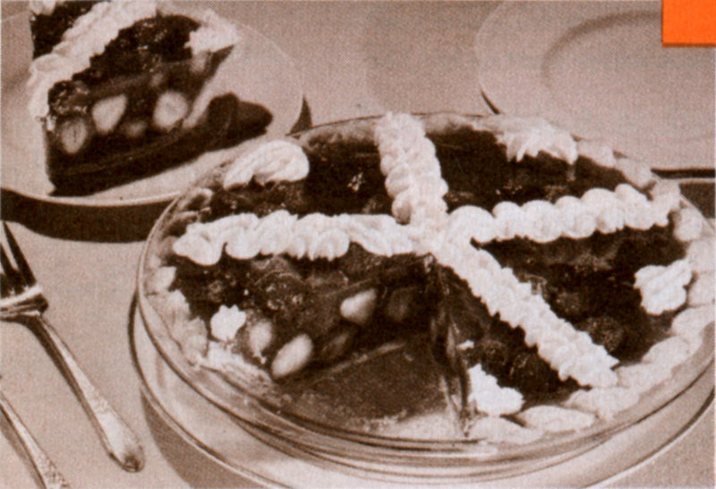
1 quart fresh strawberries
1½ cups sugar
1 envelope unflavored gelatin
¼ cup cold water
2 tablespoons lemon juice
Red food coloring
1 cup cream, whipped
One 9-inch pie shell
Wash and cap strawberries. Sprinkle with 1 cup sugar. Let stand in refrigerator for several hours. Soften gelatin in cold water. Press half the berries and all the juice through a sieve to make 1½ cups of sieved berries and juice (if necessary, add water to make up the full amount). Add remaining ½ cup sugar and lemon juice. Heat to the boiling point. Dissolve gelatin in hot strawberry mixture. Add coloring to give a bright red color. Chill until mixture begins to thicken. Place remaining whole berries in pie shell. Cover with thickened gelatin mixture. Chill until firm. Top with sweetened whipped cream before serving.
1 envelope unflavored gelatin
¼ cup cold water
3 egg yolks
1 cup crushed pineapple not drained
1 teaspoon grated lemon rind
2 tablespoons lemon juice
⅓ cup sugar
1 cup cottage cheese
3 egg whites
¼ teaspoon salt
½ cup sugar
One 9-inch crushed corn flakes crust (page 15)
Reserve three tablespoons crumbs for topping
Soften gelatin in cold water. Combine egg yolks, pineapple, lemon rind, lemon juice and ⅓ cups of sugar, in top of double boiler and cook, stirring constantly. When thick, remove from heat and add softened gelatin. Sieve cottage cheese and add to hot mixture. Cool until mixture begins to thicken. Add salt to egg whites and beat till stiff. Gradually beat in ½ cup sugar. Fold into cold mixture. Turn into chilled crust, sprinkle with crumbs; chill till firm.
2¼ teaspoons unflavored gelatin
3 tablespoons cold water
1⅓ cups milk
3 egg yolks
⅓ cup sugar
2¼ teaspoons cornstarch
⅛ teaspoon salt
1½ squares (ounces) unsweetened chocolate
¾ teaspoon vanilla
One 9-inch chocolate wafer crust (page 15)
Soften gelatin in cold water; scald milk in double boiler. Beat egg yolks slightly; stir in combined sugar, cornstarch and salt. Slowly stir in milk. Return to double boiler; cook, stir over hot water until custard coats spoon. Remove from heat, stir in gelatin until dissolved. Melt chocolate in saucepan, remove from heat. Slowly stir in one half of the custard, reserving other half for white layer. Add vanilla; beat until smooth. Cool until mixture starts to thicken. Pour into crust and chill.
3 egg whites
⅛ teaspoon cream of tarter
¼ cup sugar
2 tablespoons rum or ½ teaspoon rum flavoring
Beat egg whites with cream of tartar until stiff. Add sugar. Fold in remaining half of custard and rum. Pour on top of chocolate layer. Chill until set.
¼ cup cream, whipped
½ square unsweetened chocolate, grated
Just before serving, spread whipped cream on pie and sprinkle with chocolate.
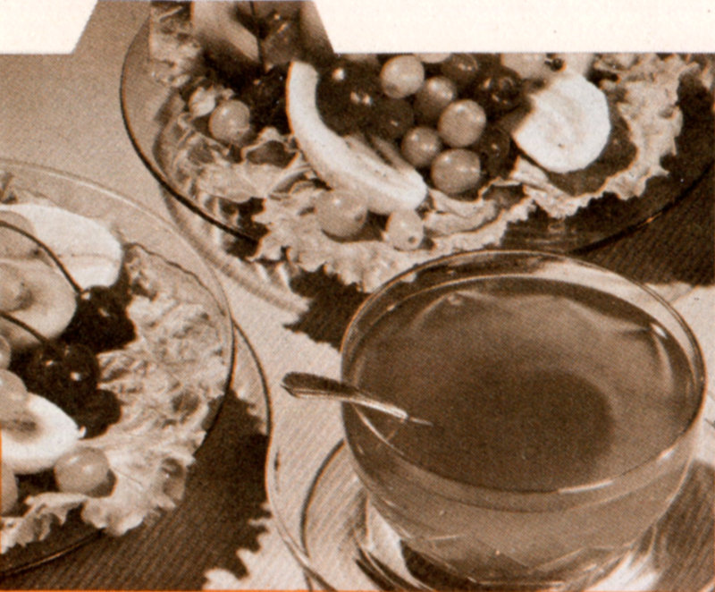
The secret of a successful salad is thorough chilling and crisping of all ingredients. Salad greens should be thoroughly cleaned and dried; fruits well drained; meat, fish and cheese cut into bite-size pieces of uniform shape. Eye-appeal is important. Add colorful garnishes to a salad that is not naturally colorful.
Salads for the main course should contain some protein-rich foods, such as chicken, meat, fish, or cheese, and vegetables. Marinate meat or vegetables separately in a tart French dressing and combine just before serving. Mayonnaise or cooked dressings give added food value and body to salads of this kind. For meat, chicken or fish salads, allow ½ cup ingredients and 2 tablespoons dressing per serving. The salad will be more attractive if the pieces are large enough to be identified.
MIXED GREEN SALAD: A green salad served before, after or with a hearty main course should be light and tangy, the servings should be small, and the dressing tart. Greens can include lettuce, chicory, romaine, water cress or endive. Other raw vegetables can be added, such as tomatoes, radishes, onions, cucumbers, carrots, beets, spinach leaves, turnips, and cauliflower or broccoli flowerettes.
SALAD TACTICS: When choosing the dressing to accompany the salad, remember a safe rule to follow is simple dressings for accompaniment salads, hearty dressings for main-course salads and sweet dressings for dessert salads. Too much dressing can ruin a salad. It is best to season salads lightly and provide additional dressing on the side.
Dip fruits that darken in lemon juice. Pieces of fruit should be large enough so they can be identified. Many of the smaller fruits and berries can be left whole or halved. Allow ½ cup fruit per serving. Handle salad foods lightly. Do not mix excessively, or packing and bruising may result. Keep salads in the refrigerator until ready to serve. Long waiting in room temperature causes them to lose their crispness. It is good practice to chill the salad plates in your refrigerator before serving the salad. This applies especially to fruit and gelatin salads.
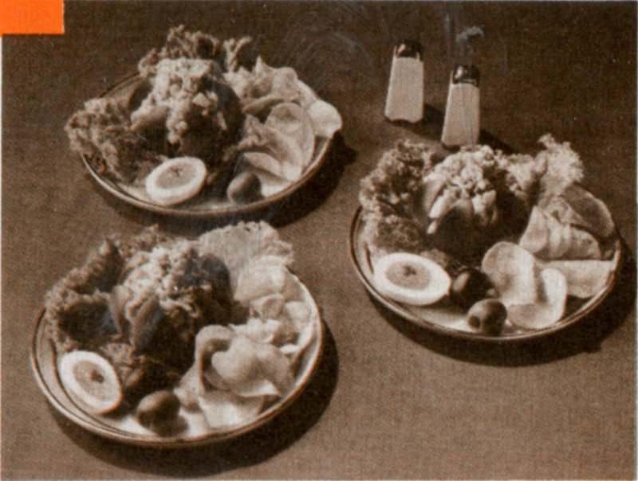
10 medium sized firm, ripe tomatoes
2 cups crabmeat (two 7-ounce cans)
¾ cup chopped celery
2 tablespoons chopped green pepper
1 pimiento, chopped
2 hard cooked eggs, chopped
2 tablespoons capers
¾ teaspoon salt
Few grains pepper
Mayonnaise
Wash tomatoes (peel if desired) and scrape out centers. Sprinkle inside of tomatoes with salt. Invert and chill in refrigerator. Fill with crab meat stuffing. Flake crab meat, combine with celery, green pepper, pimiento, eggs and capers. Season with salt and pepper. Add mayonnaise to moisten. Garnish with deviled eggs and whole baby gherkins. Yield: 10 servings.
12 medium sized cooked potatoes
½ cup chopped onion
1 tablespoon salt
¼ teaspoon pepper
1½ teaspoons celery seed
½ cup vinegar
⅓ cup chopped sweet pickle
¼ cup melted butter
4 hard cooked eggs, chopped
Mayonnaise
Dice potatoes. Add onion, salt, pepper, celery seed, vinegar and pickles. Mix lightly. Add melted butter and chopped eggs. If you desire, add mayonnaise to moisten. Yield: 10 servings.
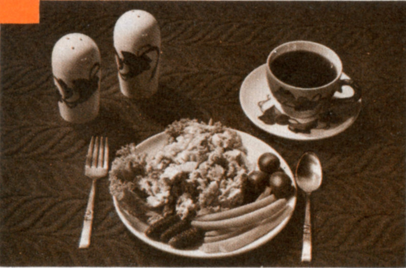
2 cups flaked tuna fish (two 7-ounce cans)
¾ cup chopped celery
½ teaspoon salt
⅛ teaspoon pepper
1 tablespoon minced onion
¼ chopped sweet pickle
4 hard cooked eggs, chopped
1 tablespoon lemon juice
⅓ cup mayonnaise
Combine tuna fish, celery, salt, pepper, onion, pickles, and eggs. Moisten with lemon juice and mayonnaise. Chill in refrigerator. Yield: 6 servings.
Two 3-ounce packages cream cheese
½ teaspoon salt
2 tablespoons salad dressing
1 tablespoon lemon juice
½ cup drained crushed pineapple
½ cup coarsely chopped maraschino cherries
½ cup coarsely chopped pecans
½ cup diced marshmallows
1 cup whipping cream
2 cups diced ripe bananas
Mash cheese with fork. Blend with salt, salad dressing, lemon juice and mix well. Fold in pineapple, cherries, nuts, bananas and marshmallows. Whip cream till thick (not stiff), and fold into cheese mixture. Turn into freezing trays of refrigerator. Freeze until firm with cold control set at coldest setting. Yield: 8 to 10 servings.
MOLDED SALADS: Before using the mold or molds when making gelatin salads, rinse them in cold water. Leave excess moisture on the molds, or brush molds lightly with salad oil. If square sided molds are used they can be lined with strips of cellophane. If individual molds are not available, small muffin pans will serve as a convenient substitute, or pour the mixture into an ice cube tray with the metal grid in position. Place the tray on the food compartment shelf until salad sets. A plain gelatin base or a flavored base may be used for the salad. Your choice depends upon the other ingredients that make up the salad.
1 envelope unflavored gelatin
¼ cup cold water
1 cup boiling water
1 tablespoon lemon juice
3 tablespoons vinegar
1 tablespoon sugar
1 teaspoon salt
2 tablespoons grated onion
2 cups diced vegetables
Soften gelatin in cold water; add boiling water and stir until dissolved. Add lemon juice, vinegar, sugar, salt and onion. Mix well. Chill until partially set. Add vegetables. Rinse mold in cold water. Fill mold with mixture. Chill until firm. Unmold on a bed of salad greens. Yield: one 8-inch ring mold.
1 envelope unflavored gelatin
1¾ cups bouillon or soup stock
1 tablespoon grated onion
Soften the gelatin in ¼ cup of the cold bouillon or soup stock. Heat the remaining stock to boiling; add softened gelatin and stir until dissolved; add grated onion or other desired seasonings. Makes one 8-inch ring mold. Note: Use chicken bouillon for chicken salad and beef bouillon for meat salads.
Use lemon flavored gelatin and follow directions given on the package. Substitute 3 tablespoons of vinegar for part of the water. Add 1 tablespoon grated onion and ½ teaspoon salt. Add flaked fish and such ingredients as chopped hard cooked eggs, pickles, celery, green peppers and olives.
1 can condensed mushroom soup
½ cup mayonnaise
1 tablespoon lemon juice
1 envelope unflavored gelatin
¼ cup cold water
1 cup celery, cut fine
2 pimientos, cut fine
1½ cups chicken, shredded
Add mayonnaise and lemon juice to soup. Soften gelatin in cold water, dissolve over hot water. Add gelatin to soup mixture and mix well. Add celery, pimiento and chicken. Turn into mold and chill until firm. Yield: 6 to 8 servings.
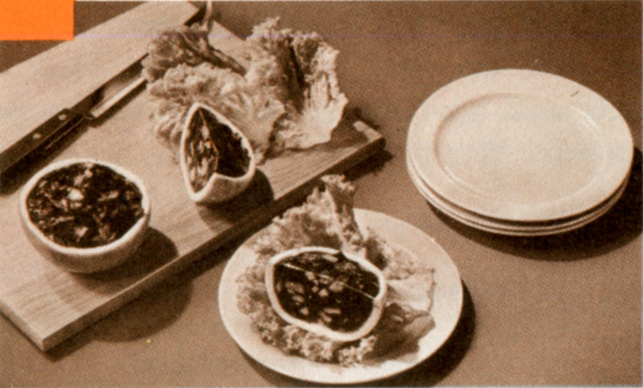
1 package raspberry flavored gelatin
1 No. 2½ can Bing cherries, pitted
2 avocados, diced
¼ cup lemon juice
2 grapefruit, halved and hollowed out
Cut grapefruit in half, remove pulp and use in other ways. Drain cherries. Combine cherry liquid and lemon juice and add water to make 1¾ cups of liquid: Heat; pour over gelatin and stir until dissolved. Chill until partially set. Add cherries and avocado. Pour into half grapefruit shells and chill until firm. Cut each half in half again for serving. Yield: 8 servings.
1 envelope unflavored gelatin
¼ cup cold tomato juice
1¼ cups hot tomato juice
¼ cup sweet pickle juice
¼ teaspoon salt
1 teaspoon horseradish
2 tablespoons lemon juice
¾ cup finely diced celery
3 tablespoons diced green pepper
1 package frozen green shrimp, cooked and cut in pieces
¼ cup chopped sweet pickle
2 tablespoons chopped onion
Soften gelatin in cold tomato juice. Add hot juice and stir until gelatin is dissolved. Add pickle juice, salt, horseradish and lemon juice. Chill until mixture starts to thicken. Add celery, green pepper, shrimp, pickle and onion. Turn into mold and chill until firm. Yield: 6 to 8 servings.
12 hard cooked eggs
2 envelopes unflavored gelatin
½ cup cold water
1 cup boiling water
1 cup mayonnaise
1½ teaspoons salt
⅛ teaspoon pepper
1 tablespoon lemon juice
3 tablespoons chopped green pepper
2 tablespoons chopped pimiento
2 drops tabasco
Soften gelatin in cold water, dissolve in boiling water. Put hard cooked eggs through a sieve or ricer. Add gelatin, mayonnaise, salt, pepper, lemon juice, green pepper, pimiento and tabasco. Pour salad mixture into mold. Chill until firm and serve with Mock Russian Dressing. Yield: 10 servings.
MOCK RUSSIAN DRESSING: Mix thoroughly ¾ cup mayonnaise, 1½ cup chili sauce and ½ teaspoon Worcestershire sauce.
2 envelopes unflavored gelatin
¼ cup cold water
2 cups boiling water
¼ cup vinegar
1 teaspoon Worcestershire sauce
2 teaspoons finely chopped onion
½ teaspoon salt
¼ cup catsup
¼ cup heavy cream, whipped
¾ cup salad dressing
½ cup diced celery
2 cups flaked salmon
½ cup sliced stuffed olives
Soften gelatin in cold water, dissolve in boiling water. Add vinegar, Worcestershire sauce, onion, salt, catsup and mix well. Chill until slightly thickened. Fold in whipped cream, salad dressing, celery, salmon and olives. Pour into fish or ring mold. Chill until firm. Unmold. Attractive garnishes may be made of sliced olives, tomatoes or hard-cooked eggs. Yield: 6 to 8 servings.
1 No. 2½ can Bing cherries, pitted
½ cup lemon juice
1 package cherry-flavored gelatin
¾ cup broken pecan meats
One 3-ounce bottle stuffed olives, sliced
Drain cherries, combine cherry syrup and lemon juice and add water to make 1¾ cups liquid. Heat, pour over gelatin and stir until dissolved. Chill until partially set. Add cherries, nuts and olives. Pour into mold and chill until firm. Yield: 8 servings.
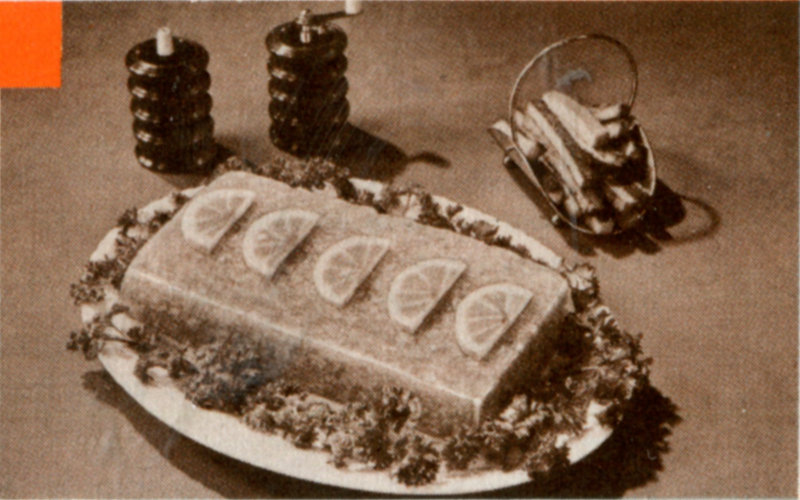
1 package lime flavored gelatin
2 cups hot water
¼ cup sugar
½ teaspoon salt
2 tablespoons lemon juice
¾ cup finely shredded cabbage
1 cup diced celery
2 tablespoons diced green pepper or pimiento
1 envelope unflavored gelatin
¼ cup cold milk
½ cup hot milk
½ teaspoon salt
1¼ cups cream style cottage cheese (1 carton)
2 teaspoons minced onion
Dissolve lime flavored gelatin in hot water. Add sugar, salt and lemon juice. Chill until mixture starts to thicken. Add cabbage, celery, green pepper or pimiento. Turn into loaf pan. Chill until set. For top layer, soften gelatin in cold milk. Dissolve in hot milk. Add salt, onion and cottage cheese. Spread over lime gelatin mixture and chill until firm. Unmold on lettuce and serve with salad dressing. Yield: 8 servings.
1½ envelopes unflavored gelatin
¼ cup cold water
½ cup hot pineapple juice
½ cup lemon juice
2 tablespoons sugar
¼ teaspoon salt
1 cup ginger ale
½ cup chopped celery
1 cup chopped red skinned apples
⅓ cup chopped dates
½ cup broken pecans
Few drops green vegetable coloring
Soften gelatin in cold water. Dissolve in hot pineapple juice. Add lemon juice, sugar, salt, ginger ale and coloring. Chill until mixture begins to congeal. Fold in celery, apple, dates and pecans. Pour into mold and chill until firm. Yield: 8 servings.
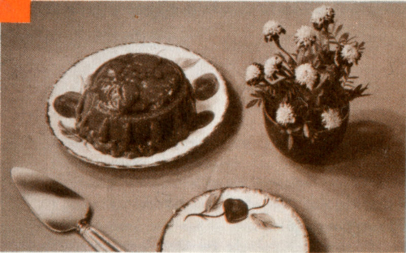
1 package frozen rhubarb
2 envelopes unflavored gelatin
½ cup cold water
1 package frozen strawberries
1 cup ginger ale
Red vegetable coloring
Cook frozen rhubarb about 5 minutes or until tender. Soften gelatin in cold water; add to hot rhubarb and stir until dissolved. Cool slightly. Add frozen strawberries and ginger ale to the mixture. Add enough red vegetable coloring to give desired bright red color. Turn into mold. Chill. Yield: 8 servings.
2 packages lime flavored gelatin
3 cups hot water
1 No. 2 can crushed pineapple (drained)
1 pint sour cream
Dissolve gelatin in hot water (some pineapple juice can be substituted for water). Chill in refrigerator until gelatin begins to congeal. Add pineapple and sour cream. Chill until set. Yield: 12 servings.
Two 3-ounce packages cream cheese
1 ounce Roquefort or blue cheese
¾ cup milk
1 envelope unflavored gelatin
3 tablespoons cold water
2 teaspoons lemon juice
½ teaspoon salt
¼ cup pistachio nuts, chopped
Few drops green food coloring
½ cup heavy cream, whipped
Blend together cream cheese and Roquefort cheese. Add milk gradually and mix well. Soften gelatin in cold water. Dissolve over hot water. Add gelatin to cheese mixture, then lemon juice, salt and nuts. Tint a pale green with food coloring. Fold in whipped cream; pour into mold and chill until firm. Yield: 12 servings.
1 small onion or 1 clove of garlic, sliced
¼ cup vinegar or lemon juice
1 tablespoon sugar
¾ teaspoon salt
⅛ teaspoon pepper
¼ teaspoon paprika
¾ cup salad oil
Add onion or garlic to vinegar, let stand 20 minutes; strain. Combine sugar, salt, pepper and paprika in a jar or bowl. Add vinegar and oil. Cover tightly and shake vigorously or beat with rotary egg beater or electric mixer. Store in the refrigerator. Shake or beat dressing each time before serving. Makes 1 cup dressing.
¼ cup orange juice
¼ cup pineapple juice
2 tablespoons lemon juice
¼ cup salad oil
2 teaspoons sugar
½ teaspoon salt
Combine juices, oil, sugar and salt in a jar or bowl. Shake or beat vigorously until well blended. Store in refrigerator. Shake or beat dressing each time before serving. Makes 1 cup dressing.
1¼ cups sugar
2 teaspoons dry mustard
2 teaspoons salt
1 tablespoon onion juice
⅔ cup vinegar
2 cups salad oil
2 tablespoons celery seed
Combine sugar, mustard, salt, onion juice and ½ the vinegar. Beat well. Then gradually add the oil alternately with the remaining vinegar, and beat until a stable emulsion has been formed. Add the celery seed. Makes about 3 cups.
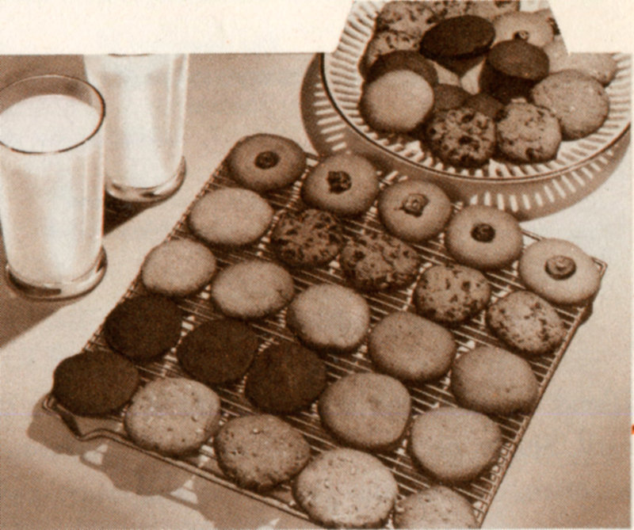
Crisp, crunchy, delightfully fresh cookies at a moment’s notice are at your fingertips when your International Harvester Refrigerator holds an ever-ready supply of refrigerator cookie dough. Refrigerator cookie dough keeps well in your refrigerator for several weeks. When ready to bake cookies, merely cut off thin slices of dough and bake as directed. Re-wrap and return remaining dough to your refrigerator.
1 cup butter
½ cup brown sugar
½ cup white sugar
1 egg, beaten
½ teaspoon vanilla
2 cups all-purpose flour
½ teaspoon soda
¼ teaspoon salt
½ square unsweetened chocolate, melted
¼ cup shredded coconut
¼ cup chopped raisins
¼ cup chopped pecans
½ teaspoon cinnamon
¼ teaspoon nutmeg
Cream butter. Gradually add sugar. Continue creaming until mixture is light and fluffy. Add egg and vanilla. Mix well. Sift together flour, soda and salt and gradually add to mixture. Beat well after each addition. Divide dough into 6 equal portions. To one portion add chocolate; coconut to another; raisins to another; pecans to another; cinnamon and nutmeg to another and leave the last portion plain. Shape each portion into a roll 1¾ inches in diameter. Wrap in waxed paper. Chill in refrigerator. Cut into ⅛ inch slices. Bake on cookie sheet in 375° oven 10-12 minutes. Yield: 5 dozen cookies.
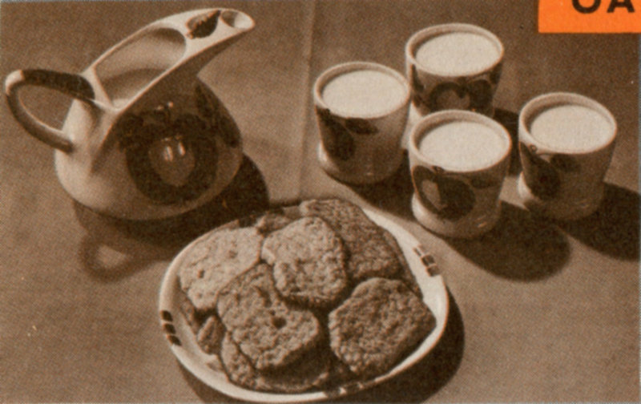
1 cup flour
2 teaspoons baking power
½ teaspoon salt
3 cups rolled oats
1 cup brown sugar
1 cup butter, melted
¼ cup boiling water
Sift flour, baking powder and salt together. Add rolled oats and brown sugar. Mix. Add butter and boiling water and mix well. Form into rolls, wrap in waxed paper and chill in refrigerator several hours. Slice and bake in moderate oven (350°F.) about 10 minutes. Yield: 8 dozen cookies.
½ cup shortening
1 cup sugar
1 egg, beaten
1 teaspoon vanilla
1½ cups sifted all-purpose flour
½ teaspoon soda
½ teaspoon salt
Cream shortening. Gradually add sugar. Continue creaming until mixture is light and fluffy. Add egg and vanilla. Mix well. Sift flour, soda and salt together and gradually add to mixture. Beat mixture after each addition. Shape into a roll about 1¾ inches in diameter. Wrap in waxed paper. Chill in refrigerator. Cut into ⅛ inch slices. Bake on cookie sheet in a moderately hot oven (375°F.) for 7 to 10 minutes. Yield: 6 dozen cookies.
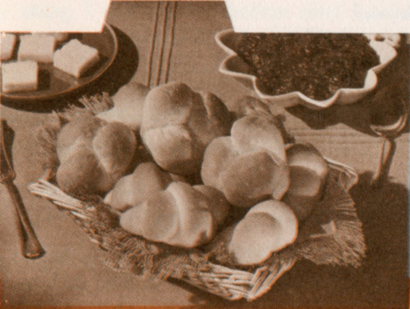
It is a particular advantage to have refrigerated dough for fresh rolls when entertaining or if the family is small and cannot use a full recipe at one time. Almost any yeast roll may be refrigerated three or four days satisfactorily. However, the recipe should contain plenty of yeast and sugar. When ready to use, the dough can be formed into rolls of any desired shape or into coffee cake. Refrigerating the dough at from 40°F. to 50°F. retards yeast activity. The surface of the dough must be greased and covered tightly to prevent drying or the formation of a hard crust.
¾ cup milk
6 tablespoons sugar
1 tablespoon salt
5 tablespoons shortening
½ cup warm water
2 cakes yeast
1 egg
4½ cups sifted flour
Scald milk. Add sugar, salt, shortening and stir. Cool this mixture until lukewarm. Soften yeast cakes in warm water and let stand until dissolved. Stir and add lukewarm milk mixture. Add beaten egg and 2 cups flour, beat until smooth. Add remaining flour and mix well. Place dough in a lightly greased bowl and brush top with melted shortening. Cover and store in refrigerator, at least 2 hours. When ready to use, punch dough down and cut off as much dough as desired. Form rolls and place in greased muffin pans. Brush with melted butter, cover and let rise in a warm place until doubled in bulk. Bake in hot oven (425°F.) about 15 minutes. Makes about 2 dozen rolls.
2 cakes yeast
¼ cup lukewarm water
1 cup milk
¼ cup butter
½ cup sugar
1 teaspoon salt
2 eggs, beaten
1 teaspoon grated lemon rind (if desired)
5 cups sifted flour (about)
Soften yeast in lukewarm water. Scald milk. Add butter, sugar and salt and cool to lukewarm. Add 2 cups flour and beat well. Add yeast, eggs and lemon rind. Blend thoroughly. Add remaining flour to make a soft dough. Turn out on lightly floured board and knead until satiny. Place in a greased bowl, cover and let rise in warm place (80° to 85°F.) until doubled in bulk. Punch down and form into smooth ball. Grease surface lightly, cover and put into refrigerator. To use, remove dough from refrigerator and punch down. Mold at once into rolls, tea rings or coffee cakes, or if preferred, let dough stand in warm room for an hour, punch down and mold. Place in greased pans and let rise until doubled in bulk. Bake in moderate oven (375°F.) 20 to 25 minutes for rolls, 25 to 30 minutes for coffee cakes. Yield: about 3½ dozen rolls or two 12-inch tea rings.
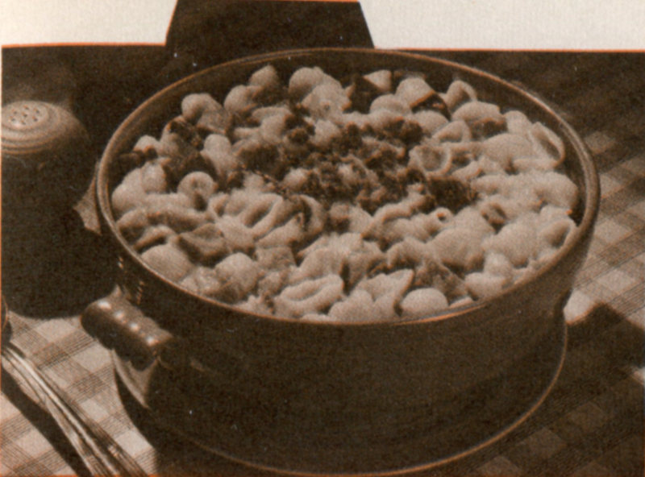
Colorful, tasty, all-in-one dishes—casseroles—are ideal as the main dish for luncheon or supper. They are the solution to clever disguising of left-over foods. They are the answer to time-saving, before-hand meal preparation. The casserole dish can be prepared several hours in advance, refrigerated, and later placed in the oven so as to be piping hot by meal time.
As a rule, casserole dishes are made up of various combinations of a protein food, a starch, a vegetable, and a sauce. The sauce is either white sauce, plain or varied, or a cream soup. The starch may be noodles, spaghetti, macaroni, crackers, potatoes or potato chips, bread crumbs or a cereal. The protein food may be meat, fish, poultry or cheese. Often the vegetables and protein foods are leftovers which are cleverly combined to appear dressed-up in a new attire.
For the majority of casserole dishes, a medium white sauce is the right consistency—the proportions being 2 tablespoons butter to 2 tablespoons flour, ½ teaspoon salt, few grains pepper, and 1 cup milk. Thin sauce can be made by using 1 tablespoon butter and 1 tablespoon flour to 1 cup milk.
VARIATIONS: Added zest enhancing the flavor of casserole dishes can be obtained by varying the sauce.
SUGGESTIONS: (These proportions are for 1 cup white sauce.)
PARSLEY SAUCE: Add 2 to 4 tablespoons chopped parsley after sauce has cooled.
HORSERADISH SAUCE: Add ¼ cup grated horseradish, drained, and ¼ teaspoon dry mustard.
CHEESE SAUCE: Add ½ cup grated cheese and a dash of paprika. Stir over low heat until cheese is melted, or substitute 1½ teaspoons Worcestershire Sauce for paprika.
OLIVE SAUCE: Add 1 egg, unbeaten, ¼ cup light cream and cook over hot water 2 minutes, stirring constantly. Add ⅓ cup chopped ripe or stuffed olives.
Many gay garnishes are easily made from raw vegetables. Place garnishes, such as radish roses, celery curls or carrot sticks in a bowl of ice water for crisping. Later these vegetables can be wrapped in a damp cloth and stored in the refrigerator crisper until ready to serve.
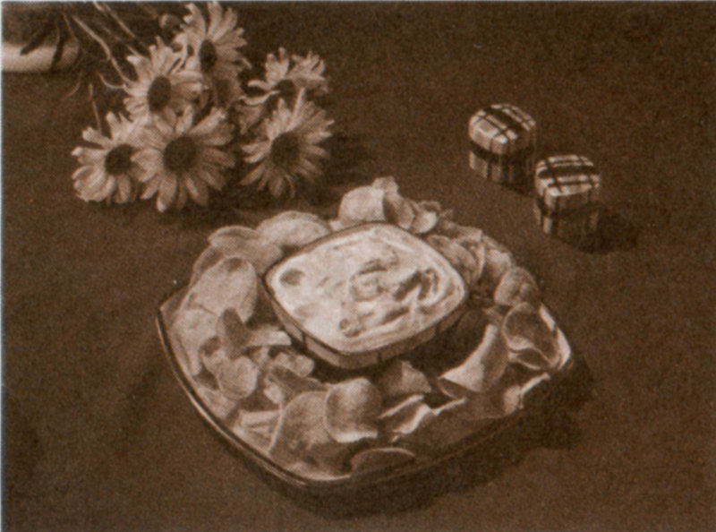
Sandwiches and hors d’oeuvres can be successfully stored for several hours in the household refrigerator. It is especially important that the bread for hors d’oeuvres or sandwiches be spread generously with butter. This is to prevent the filling from soaking into the bread. Wrap sandwiches in waxed paper and then in a damp cloth. If they are arranged on trays, cover with waxed paper and a damp cloth. Sandwich fillings, too, can be stored in the refrigerator until serving time.
1 pound cottage cheese, drained
2 tablespoons chopped olives
½ teaspoon salt
¼ teaspoon pepper
Dash of paprika
5 drops tabasco
Combine all ingredients and mix well.
1 cup flaked salmon
¼ cup diced celery
1 teaspoon minced onion
2 teaspoons minced parsley
1 tablespoon lemon juice
½ teaspoon salt
3 tablespoons mayonnaise
Combine all ingredients and mix thoroughly.
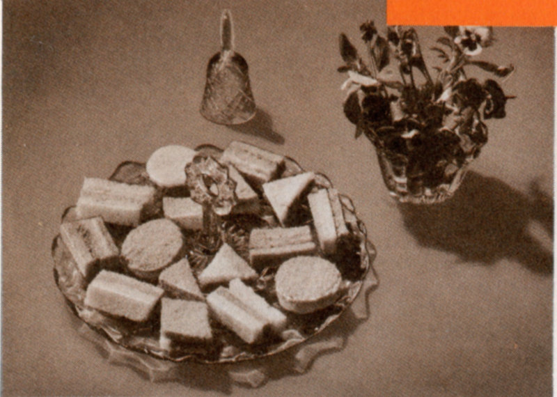
¼ pound American cheese
2 hard cooked eggs
2 teaspoons chopped onion
¼ teaspoon salt
Dash paprika
3 tablespoons mayonnaise
2 teaspoons chopped pimiento
Put cheese and eggs through fine food chopper; add remaining ingredients and mix well.
3 hard cooked eggs, chopped
2 tablespoons chopped green pepper
2 tablespoons chopped celery
3 tablespoons chopped green olives
3 tablespoons chopped walnuts
3 tablespoons mayonnaise
1 tablespoon ketchup
¾ teaspoon salt
Combine all ingredients and mix well.
1 cup finely chopped raw cabbage
3 slices crisp bacon, crumbled
3 tablespoons mayonnaise
1 teaspoon minced onion
⅛ teaspoon salt
⅛ teaspoon celery salt
Dash of pepper
Combine all ingredients and mix well.
4 frankfurters, cooked
4 tablespoons pickle relish
3-4 tablespoons mayonnaise
Put frankfurters through a fine food chopper. Add relish and mayonnaise. Mix well.
INTERNATIONAL HARVESTER
1 005 043 R2. 11-1-50—75B.
LITHOGRAPHED IN UNITED STATES OF AMERICA